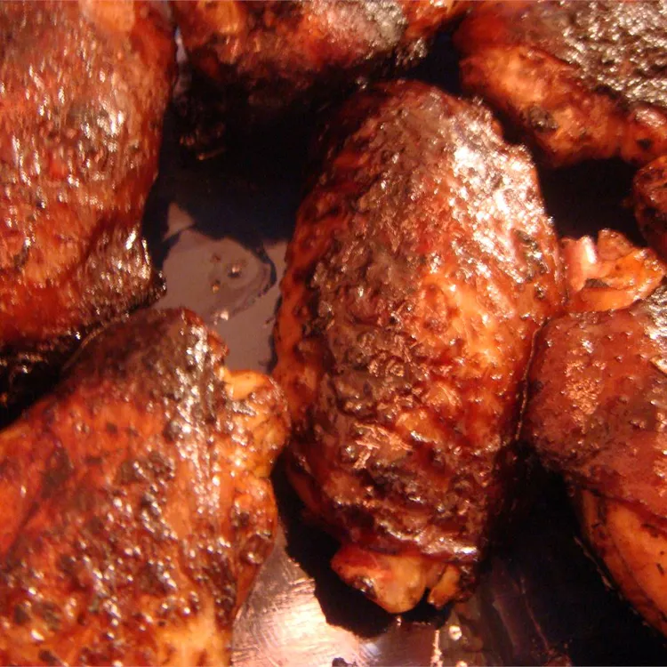

Malaysian Barbecue Chicken Wings

Description
This is Malaysian Chicken wing recipe. It uses a Malaysian seasoning on chicken wings to make a delicious tender wings
for this recipe. It gives a nice sweet and savory dish. Cooking this will create incredible flavors from the asian
aromatics.
Ingridents
- 12 Chicken Wings
- 4 tablespoons soy sauce
- 1 tablespoon sesame oil
- 2 tablespoons oyster sauce
- 1/2 tablespoon garlic powder
- 1/2 teaspoon onion powder
- 1 tablespoon black pepper
- 1 table spoon dried basil
Steps
- In a bowl, combine soy sauce, sesame oil, oyster sauce, garlic powder, onion powder, black pepper, and dried basil.
- Mix together with the Chicken wings, cover and put in the fridge overnight
- The next day, take oil and put it on the grill on high heat
- Put the wings and cook for 10 minutes on each side
- Put on a plate and server